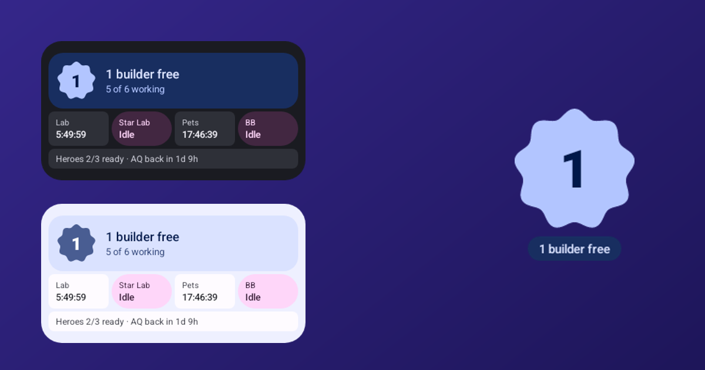

The Clash of Clans widget for Android
Clash Timers puts your free builders, upgrade timers, laboratory research, pets and heroes on your home screen, and tells you the moment a builder is free. Free, open source, no login and no ads.

Everything Clash, at a glance
How many builders are idle, or a live countdown to the next one.
Buildings, heroes, Gear Ups, Crafting Station, lab, pets, Builder Base, Apprentice and Clock Tower.
Know the moment something finishes, and get a nudge if a builder sits idle.
Which heroes can attack, and when an upgrading one is back.
See what a Builder Potion, Research Potion or Builder Bite would finish before you use it.
Free builders above your clock with Smartspacer, shown only when it matters.
From a 1x1 builder badge to a full list, in Material You colours, light or dark.
No account, no server. Your village data never leaves your phone.
Widgets in every size


Set up in a minute
- Install Clash Timers from the latest release (or with Obtainium for automatic updates).
- In Clash of Clans, open Settings → More Settings → Data Export and tap Copy.
- Open Clash Timers: the export is imported automatically.
- Long-press your home screen → Widgets → Clash Timers.
Questions
Is there a Clash of Clans widget for Android?
Clash of Clans has no widget of its own. Clash Timers adds one: free builders, upgrade timers, research and heroes on your home screen.
Do I need to log in?
No. It uses the game's own Data Export. No account or Supercell ID is needed.
Can I get banned?
Clash Timers never touches the game. It only reads the data export the game gives you, and nothing is sent anywhere.
Does it update by itself?
Timers count down live. After starting new upgrades, copy a fresh export, or turn on auto-import with Shizuku and it happens on its own.
Is there an iPhone version?
No, Clash Timers is Android only (Android 12 and newer).